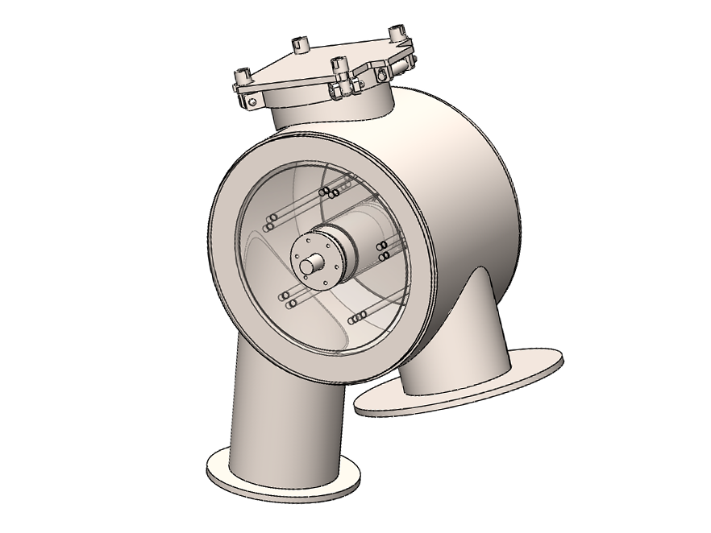
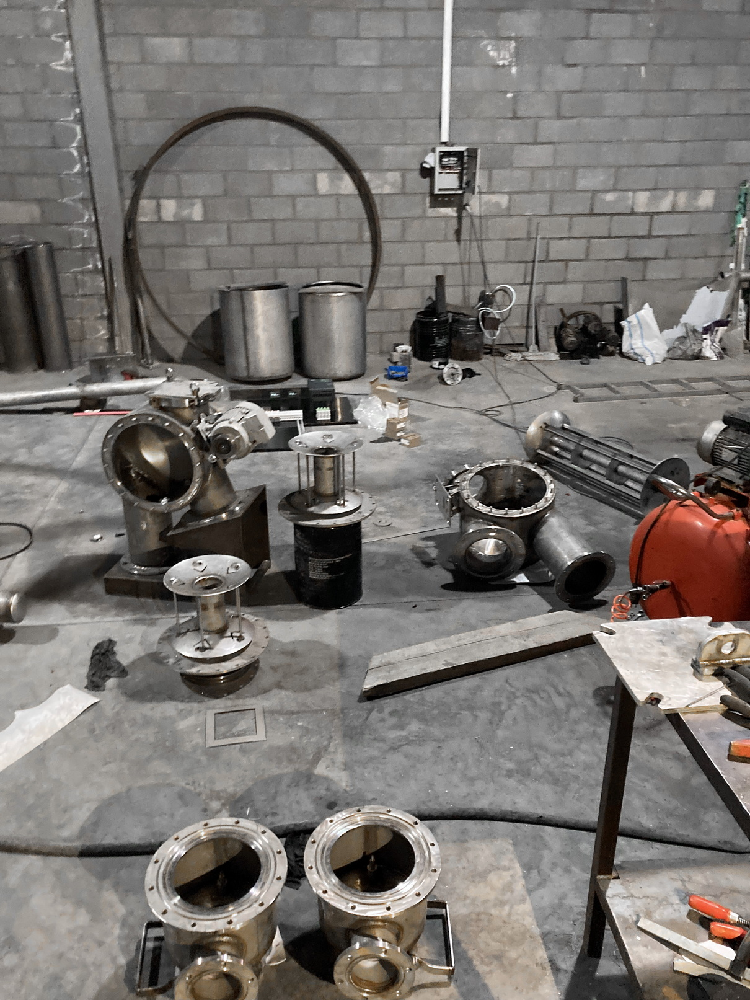
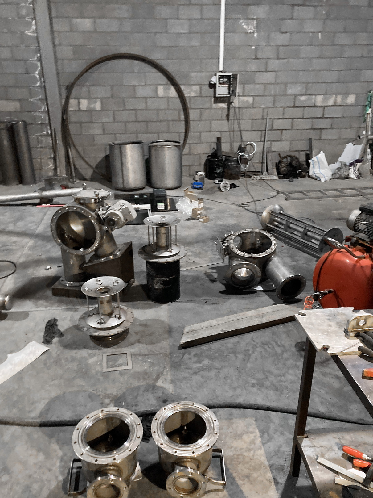

High temperature fabric dyeing machine
Project description
-
1.Design
I took the initial step in the construction process by personally utilizing Solidworks software to complete the mechanical design.
-
2.Laser cut
Next step is to the cut sheet metals by laser CNC cutting machines. Various sheet metal thickness (1.5mm to 20mm) has been used for different parts. Flanges, doors and caps has been made out of 12 to 20mm sheets..
-
3. Rolling
Cut pieces has been rolled as the main body of the tanks and other parts such as heat exchanger and which's body. Pipes have been rolled as well in order to being used in small tanks water inlet and heater.
-
4.Bending
Legs of the machine and some other parts has been bended by hydraulic bending systems.
-
5.Punching
Inside the main tank, there are J-boxes like a colander which fabric flow inside of it. Each of them contains up to 150kgs of fabric. The holes on the both side of it, let the water flows in circulation.
-

6.Lathing
More than 200 parts, has been made from stainless steel shafts in different sizes by manual and CNC lathing machines.
Parts
-
1.Tanks
This machine is made out of one main tank, one reserve tank for time and energy saving purposes and two small tanks for dye and chemical transfer.
-
2.Heat exchanger
Heat exchanger has been made to control temperature using steam as a heater and water as a cooler. Condensed steam can transfer to the reserve tank for energy saving.
-
3.Filter and manhole
A filter has been provided to filter the fabric lints in order to prevent accumulation of them in the machine's gaps which can couse problems. Also there is a manhole to enter inside the main tank for repairment purposes.
-
4.Pumps
Main pump is being used for circulation of the fabric and solution. Dosing pump has been provided to transfer dye and chemicals from small tanks to the main one.
-
5.J-box
Each J-box contains 6 different pieces which has to be assembled. It has to be super smooth while the fabric can be hurt by contacting rough sections. So polishing the inside's surface play significant role.
-
6.Electricity panel
There was a electricity panel which consists electric and pneumatic equipments. The cables and air hoses has been crossed throw the canals from this panel to motors and valves.
-

7.Winch
Rotary winch has been provided in order to help the circulation system. Speed of the fabric is controlable while its motor runs with variable frequency drive.
-
8.Nozzle
Pumped water by the circulation pump, flows the fabric with the solution inside the pipe which reaches the other side of the J-Box. Volume of the flow is adjustable with a linear actuator.
-
9.Door
Filling and unloading of the fabric, is being done through the door. Silicone washer has been used to seal the door due to it's importance. There is a glass provided in the middle to give the opportunity of seeing inside in eny step.
Assembly and welding
After degreasing, cleaning and welding seperated parts, next step is to connect pieces together. It has been done according to the blueprints using solidwork software. Main tank has to be assempled in a certain order:
-
1.First lense
First lense which is 6mm in thickness has been attached to the main body at the very first step of the assembly of the main tank. Polishing the inside sureface has to be done at this step just before you put the J-boxes inside.
-
2.Second lense
Second lense has been attached to the main body after J-boxes standed inside the body. This part is the most difficult step of the project.
-
3.Legs and winch pipes
Four legs of the machine, has been welded to the body. Each j-box has its specific winch and nozzle at the same aux. So there are 2 flanged pipes in order to connect to the connect main body and winch.
-
4.Doors
Complete assembled doors, has been welded to the main body. There was one for each J-box in order to fill and unload and control the fabric.
-
5.Filter
Filter has been atached to the bottom of the main tank, and filtered solution is being sucked through it by the circulation pump.
-
6.Pump and heat exchanger
The circulation pump, pumps the solution to the nozzles where the fabric and solution flow into a J-box. The heat exchanger has been placed after the pump.
-
7.Nozzles and winches
This parts, play the main roll in fabric circulation. The winch's speed in being controlled by variable frequency inverter drive. There is a collector before nozzles to devide flow equally between nozzles.
-
8.Piping and facilities
Last step of assembly, is piping and connecting different tanks using pnuematic valves to control the process. 30 valves has been used for this purpose controled by PLC.
Electricity and automation
Electricity system of this machine has been designed by me using pneumatic valves, variable frequency drives, sensors and PLC.
-
Pnuematic valves
30 valves have been used in this machine for different purposes such as dosing, heating, filling, draining and etc.
-
Hydrostatic sensor
Amount of solution in reserve tank and small tanks are being measured by this sensor. It sends 4-20ma signal depends on how much solution is inside the tank to the PLC.
-
Magnetic level sensor

Level of water in the main tank is measured by using this sensor. There is a magnetic ball inside the pipe and it's floating on the surface of water in the tank. Sensor reads the height of where the magnetic ball is. Then you can calibrate it in the PLC to find the real level of water inside.
-
Beem detector sensor
This sensor, detects errors in fabric circulation. This also give the operator the opportunity to unload the fabric faster.
-
Human machine interface
Program composing, editing, running, monitoring and controlling of the machine are being done using HMI which is connected to the PLC with modbus communication protocol.
-
PLC

PLC is actually machine's brain. All input and outputs including digital and analog sensors, microswitches, push buttons, valves, motors and etc are being processed here.
-
Linear actuator
This actuator has been used to adjust water flow by moving cones up and down inside the nozzles.
-
Inverter
Variable frequancy drives or inverters has been used to control circulation pump and winches. This gave us ability to control the circulation speed.
-
PT100
Temperature of the tanks has been detected through PT100 sensors which are also being processed in PLC.
-
User Interface
-
Home page
-
Manual working
-
Edit program
-
Batch start
-
Automation
-
Settings / IO monitoring
Team mates
-
Ibrahim Coban
Professional Tig welder, with more than 10 years experience in manufacturing and mechanical assembly. With his connections in Istanbul, some parts of the machine such as big valves, has been imported from Turkey.
-
Behrooz Kanani
Chemical engineer who helped us with fluid and pump calculations, pipe sizing and fabric dyeing technics.
-
Ali Nasrollahi
Proffessional Tig welder, with experince in welding stainless steel and Aluminium alloys. With his experience in manufacturing in pharmacology industry, he helped us to design with different point of view.
Gallery


 
